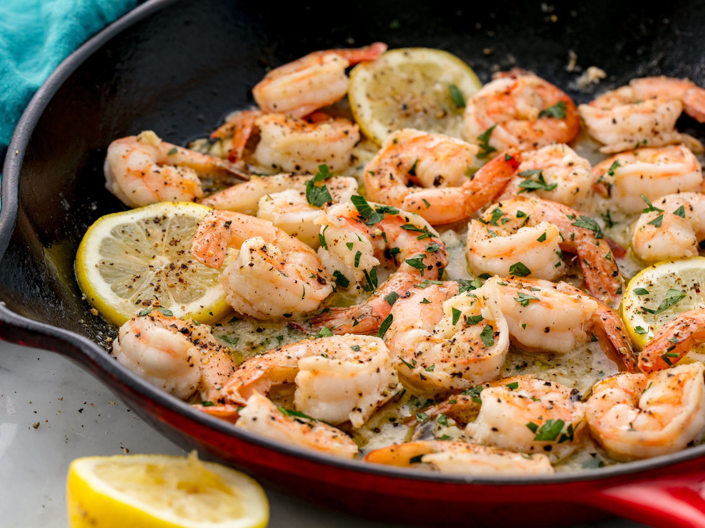

Lemon Garlic Butter Shrimp

A quick and flavorful dish perfect for a weeknight dinner. The succulent shrimp are cooked in a rich
lemon garlic butter sauce, served over a bed of pasta or rice.
Ingredients:
- 1 lb (450g) large shrimp, peeled and deveined
- 3 tablespoon unsalted butter
- 4 cloves of garlic, minced
- 1/4 cup chicken broth
- Zest of 1 lemon
- Salt and pepper to taste
- 2 tablespoons fresh parsley, chopped
- Cooked pasta or rice, for serving
Steps to Make:
- Season the shrimp with salt and pepper.
- In a large skillet, melt 2 tablespoons of butter over medium heat. Add the shrimp and
cook until pink, about 2 minutes per side. Remove the shrimp from the skillet and set aside.
- Add the remaining tablespoon of butter to the skillet. Add the garlic
and cook until fragrant, about 1 minute. Stir in the chicken broth, lemon juice, and
lemon zest. Bring to a simmmer.
- Return the shrimp to the skillet and toss to coat in the sauce. Cook for another 1-2
minutes. Sprinkle with parsley and serve over pasta or rice.
Time to cook:
15-20 minutes
Substitutes:
- Butter can be substituted with olive oil or margerine.
- Chiken broth can be replaced with vegetable broth or white wine.
- Fresh lemon juice can be replaced with bottled lemon juice.